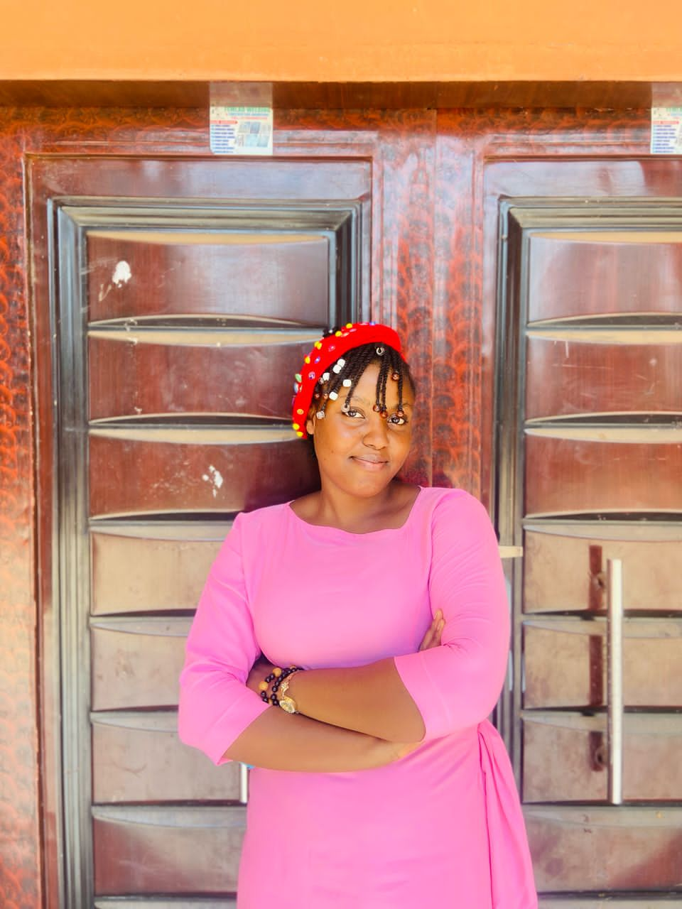
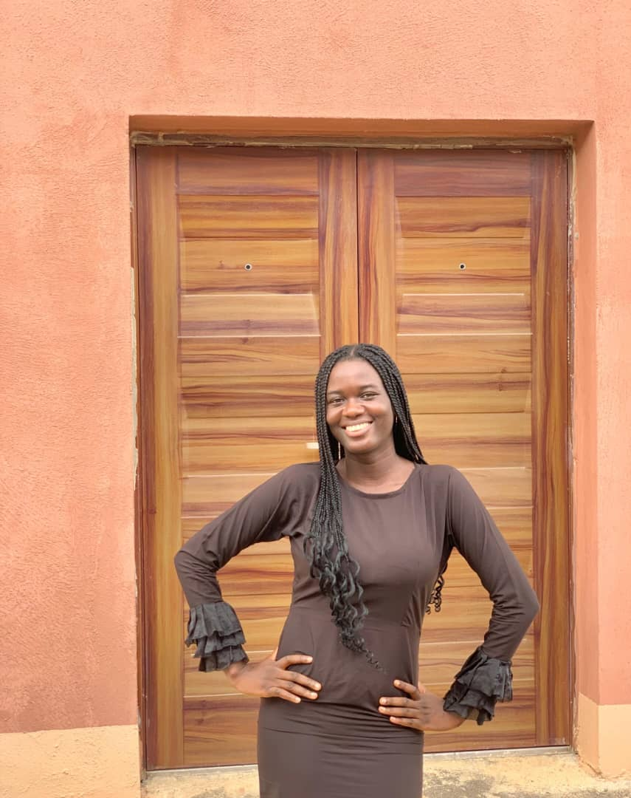

Our Legacy of Hope
Behind every statistic is a human heart. Explore the journeys of those who dared to dream, supported by the Yanju Foundation's mission to empower, educate, and elevate communities.
Portraits of Transformation
Ochie ThankGod Nwoba
"The foundation's financial aid saved my career, paying my school fees. I'm grateful!"
Before
Uncertain whether he could continue his education due to financial strain.
After
School fees covered by Yanju Foundation; built a disciplined reading habit from Atomic Habits that lifted his academic results — his best year yet.

Bankole Praise Oluwanifesimi
"I'm blown away by how Yanju Foundation has transformed my life!"
Narrative: Through the 90-Day Life Upgrade program and lessons from Atomic Habits, Praise learned to set and achieve goals — and is stepping into a new season of growth.

Boluwatife Akande
"The foundation's teachings have clarified doubts and helped me find my purpose in Christ."
Narrative: Through consistent engagement with Yanju Foundation's resources, Boluwatife has grown in identity, balance, and daily discipline.
Deborah Oladapo
"I'm more confident and expressive now. The foundation's teachings have helped me find my voice."
Before
Reserved and hesitant to express herself or speak up.
After
Confident and expressive, applying lessons from Atomic Habits and The 5am Club to grow daily.
In Their Own Words
Full testimonials from the young people and partners whose lives Yanju Foundation has touched.
Ochie ThankGod Nwoba
My Journey with Yanju Foundation
Ever since I came to Yanju Foundation my life changed totally, I started realising that I can actually pilot my life to the direction I want it to go. This organisation has impacted my spiritual life, academic, finance and my daily habits.
Spiritually, our weekly fellowships have helped me establish a relationship with God. I've had an encounter with God in the place of prayer which I'm afraid of telling people because I feel like they won't believe.
Academically, the lessons from the book we read (Atomic Habits) have helped me draft a reading table that helped me manage my time fostering academic excellence. I'm now intentional when it comes to time management. And I see the impact heavily on my results.
Financially, this foundation has saved me and my career by granting me financial aid, paying my school fees and I will never take it for granted.
In my daily life, I've been able to develop this consciousness for my daily habits, having things arranged in the best pattern that works for me.
All these achievements have made this year my best year ever and I'm grateful to God for making this a reality in my life.
Thank you Yanju Foundation, Merry Christmas 🎄
Deborah Oladapo
My Journey with Yanju Foundation
First of all I would appreciate God over my life by creating a platform for me in the foundation, I'm saying a big thank you. I also thank God over the life of our founder and I pray God will continue to uphold and strengthen her. Her vision and mission would be accomplished by God's grace.
At first when the program started I used to feel so stressed or should I just say disturbed because I am this type of person that doesn't really like being committed to a particular thing. When it comes to doing things we are being told: reading the book, listening to messages, and the core goals (the upgrade).
In my mind I would be like, is this not too much? But then I would remember I gave my consent so no going back. So I just put God into the matter and asked for help and God actually helped me because it would just come to my consciousness mostly on Wednesday that I haven't done my assignment; I started having interest in doing the activities; and I find it convenient to do without much ado.
On the transformation: For me it actually started with the book — although I love reading novels, I just got familiar with reading books recently. But I got inspired by the beginning of the book because of the story, and when I started reading other chapters I got to see that almost every chapter has a story included, then I started looking forward to other chapters. So far I really enjoyed the author's own story because even with his setback he was able to make a big difference with his habit and restructure his life, although it took time — I think six years.
I love every message but I really got impact when I listened to "The Grace Called Favour" by AJS. I mostly love the part on Honour, which is one of the keys to activate the grace. It was just like I gained insight and deeper understanding to the meaning of the word. It actually changed my mentality — it upgraded the way I see things.
And for the course I always remember the seven things to do with the word of God: read, study, meditate, confess, obey, preach, and contextualize the word.
For me, I really have changed because I now look forward to learning more and I get to express myself one way or the other, especially when I am being called to talk — before it was always like defending a project. But at this point I appreciate God and say a big thank you to every supporter of Yanju Foundation. Thanks for the hard work and commitment. God bless us all.
Bankole Praise Oluwanifesimi
My Journey with Yanju Foundation
When I first joined the foundation, I was unsure of what to expect. Little did I know that this foundation would really aid my spiritual, personal and professional growth.
One of the most impactful experiences I had was listening to "Little Foxes" by AJS. This sermon made me aware of small, insignificant factors that can create widespread damage to my destiny, and how I would work on them — which I have started working on and seeing impact.
Another mind-blowing experience is the 90-Day Life Upgrade by DDK. I was made to know reasons my goals failed in the past, and also the mindset I needed to have to step into a life of manifestation. I learnt the transformational goals which I have applied and am still working on.
Also, reading Atomic Habits has been transformative — I would say Habit Stacking stood out the most, and I have been applying it and seeing changes. This book is teaching me that I can have it easier changing a bad habit to a good one.
Lastly, I'm grateful to Miss Fola for making it easier and impactful for us (for not being tired of us too 😅), 'cause my journey with Yanju Foundation has been nothing but transformative. I look forward to more impactful, mind-blowing and transformative experiences.
Boluwatife Akande
My Journey with Yanju Foundation
My engagement with the resources has been pretty insightful — it has helped me in clarifying doubts, growing, and being a better me.
It has helped me learn how to do things right, the same way every time. It has helped me know that little things matter and bring improvements — but no matter how little it appears, consistency is the key.
It has helped me in growing, exploring all areas, so that the wheel of my life must be balanced. It has helped me in knowing who I am, my identity, and helping me find my purpose in Christ. It has helped me know the value of relationship and the gift of people.
And finally, to daily apply myself to learning — learning by reading isn't enough, but to pray, seek, and strive to implement all that I've learnt.
E-Tutors College
Alade-Owo Omi-Adio, Ibadan — Letter of Appreciation
On behalf of the management, staff, students, and parents of E-Tutors College, we express our deepest gratitude to Yanju Foundation for your remarkable generosity and unwavering commitment to the education of our student, Bankole Gift.
Your decision to sponsor the student's entire academic session, including the payment of school fees, WAEC and NECO examination fees, as well as other educational expenses, is an extraordinary act of kindness. Your support has lifted a great financial burden from the family and has given the student the opportunity to pursue quality education without interruption.
This noble gesture demonstrates your passion for empowering young people through education. By investing in the life of Bankole Gift, you have not only transformed the student's future but have also inspired hope in our school community. We are confident that your investment will yield lasting results as the student strives for academic excellence and responsible citizenship.
We sincerely appreciate your compassion, generosity, and belief in the power of education. We pray that God richly blesses Yanju Foundation, grants your organization greater capacity to continue touching lives, and rewards every member and supporter of the foundation abundantly.
Thank you for being a beacon of hope and for making a lasting difference in the life of one of our students.
With profound appreciation,
Management, E-Tutors College
Voices of Resilience
Witness the raw, emotional journeys of our beneficiaries through their own words.

Community Outreach 2023
2:15 • Mini-doc
Mentorship Highlights
1:50 • Interviews
Success in Lagos
3:05 • Case Study
Be Part of the Next Story
Every donation and every hour of volunteering helps us write a new chapter of empowerment for someone waiting for a chance.